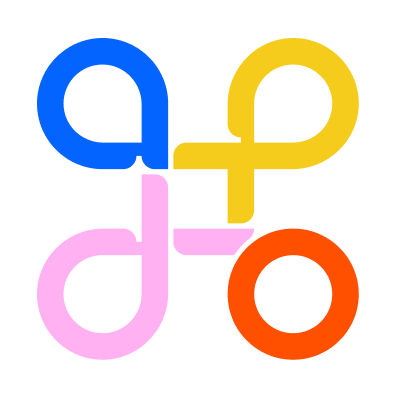
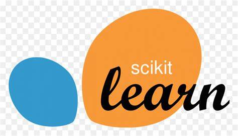
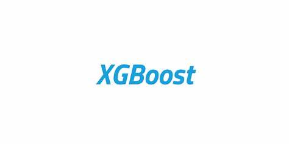
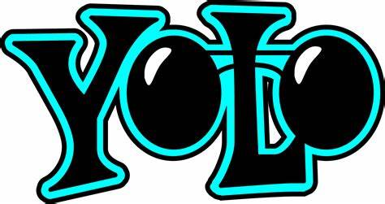
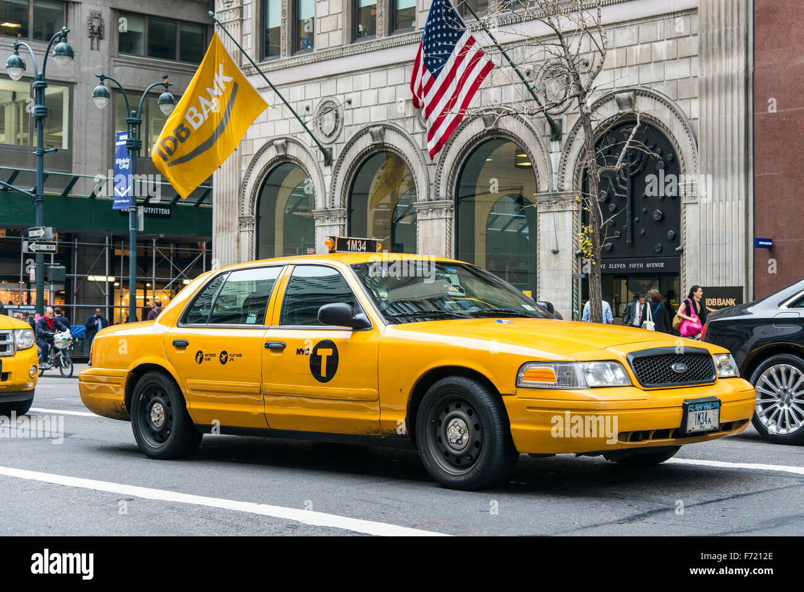

I am Mridul, a passionate Data Science student and AI enthusiast with hands-on experience in Machine Learning and Deep Learning. I love building AI-driven solutions, from language modeling to time-series prediction, and enjoy working on real-world forecasting and optimization tasks.
Download ResumeAbout Me
Experience

AI Intern @ Adopt.ai
June 2025 – PresentWorking on AI-driven projects, contributing to model development and deployment in real-world applications.
Skills
- Python
- TensorFlow
-  Scikit-learn
-  XGBoost
 Pandas
Pandas NumPy
NumPy- Matplotlib
- Seaborn
 OpenCV
OpenCV-  YOLO
- Flask
My Projects
Youtube2Blog Generator
Built an AI-powered system that converts YouTube video Links into structured blog content using multi-agent pipelines for title, summary, and conclusion generation.

Temperature Forecasting
Processed temperature data and improved forecasting with LSTM, achieving a 5.72% improvement over baseline models.

Language Model
Developed an LSTM-based language model on email data for generating coherent email-like text. Built a text generation pipeline and optimized with embedding layers and dropout.
FIT-U: AI Fitness Assistant
AI-powered fitness app using computer vision and pose estimation to track exercises in real-time.

Car Counter Project
YOLOv8 and OpenCV-based vehicle detection and counting system for real-time video feeds.

NYC Taxi Fare Prediction
Predicted NYC taxi fares using XGBoost, reducing RMSE to $3.22 while maintaining high accuracy.
Contact
Feel free to reach out via email or connect on social media!